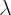
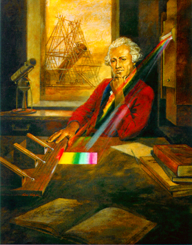
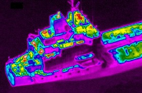

Infrared radiation is a form of electromagnetic radiation with wavelengths longer than those at the red-end of the visible portion of the electromagnetic spectrum but shorter than microwave radiation. This wavelength range spans roughly 1 to several hundred microns, and is loosely subdivided – no standard definition exists – into near-infrared (1-5 microns), mid-infrared (5-40 microns) and the far-infrared (40 to 350 microns).

Near-infrared light comes from relatively cool (750 – 3000 Kelvin) objects in our Universe, such as red giants and cool red stars. Mid-infrared radiation can comes from (140-750 Kelvin) dust which has been warmed by stars, proto-planetary discs, planets and comets. Due to the longer wavelength, and thus lower frequency (f = c/

where c is the speed of light and is the wavelength) and energy (E = h x f where h is Planck’s constant) of far-infrared radiation, it traces even colder objects (12 – 140 Kelvin), such as cold molecular gas clouds and dust clouds.Discovery
Around 1800, the German-born British-astronomer William Herschel discovered infrared radiation. He did so with a simple experiment in which he dispersed sunlight through a prism and placed a thermometer at the location of each colour. He noticed that the thermometer temperature increased when he did this, which was not really unexpected since sunlight carries warmth. However when he placed the thermometer past the red end of the spectrum – where there was no visible sunlight – the thermometer’s temperature still increased! Herschel had discovered infrared radiation – radiation beyond the red end of the visible spectrum.

Credit: Infrared Processing and Analysis Centre, Caltech/JPL
Today, infrared radiation is perhaps most famous for enabling people to see at night via military night-vision goggles. These effectively transform the infrared radiation into visible wavelengths that we can see.

Credit: © Euro-Mediterranean Centre on Insular Coastal Dynamics, Malta. Reproduced with permission.